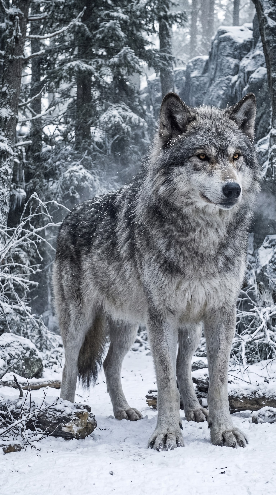
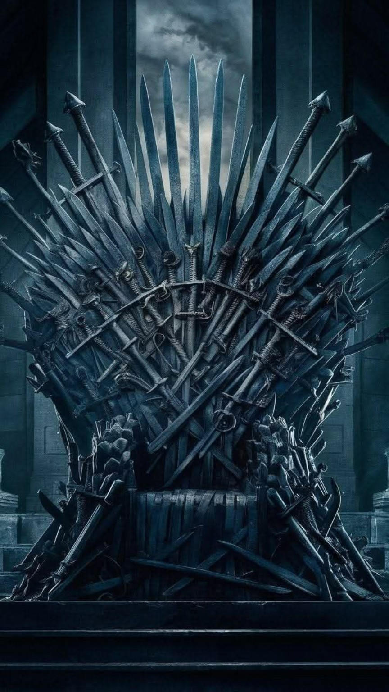
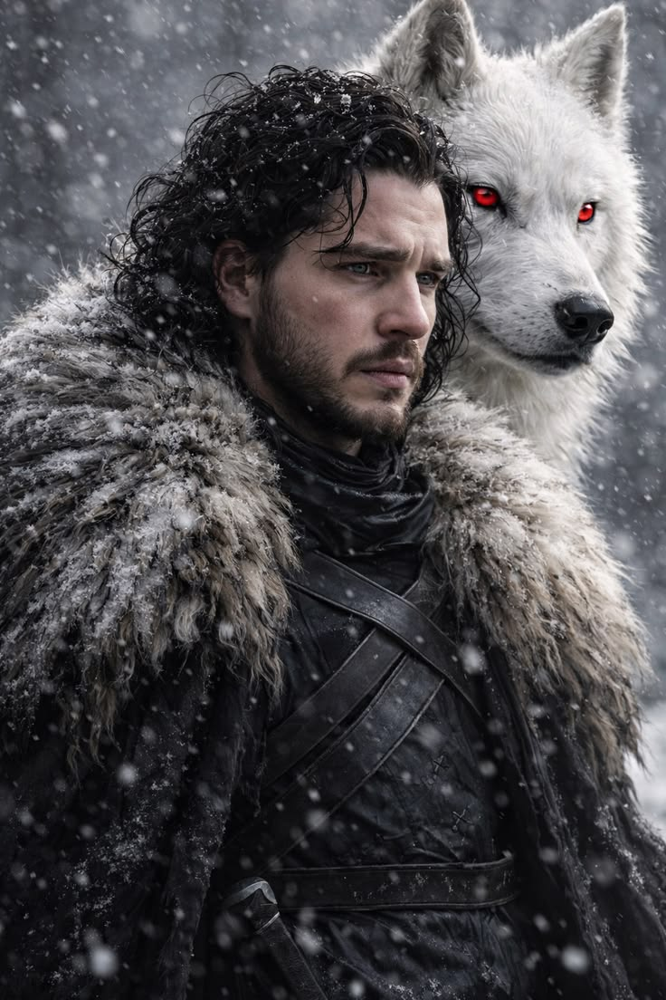
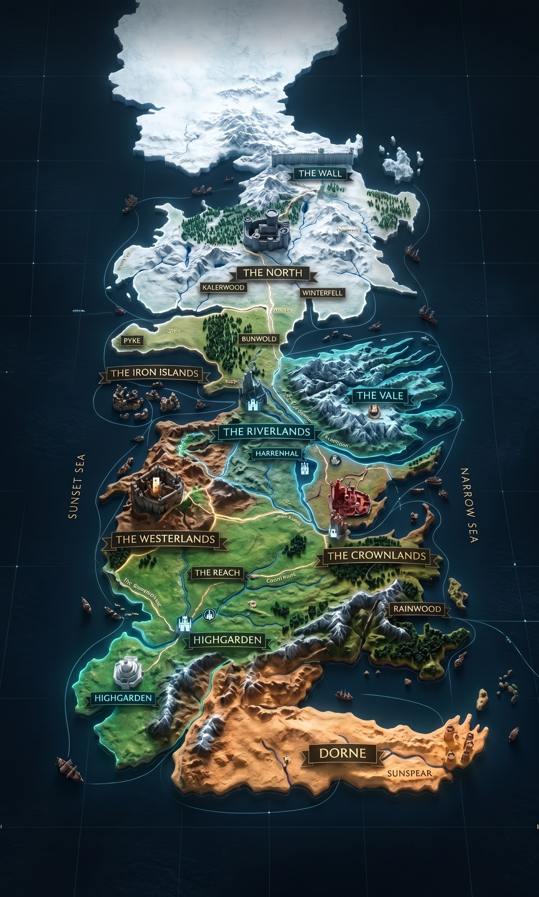
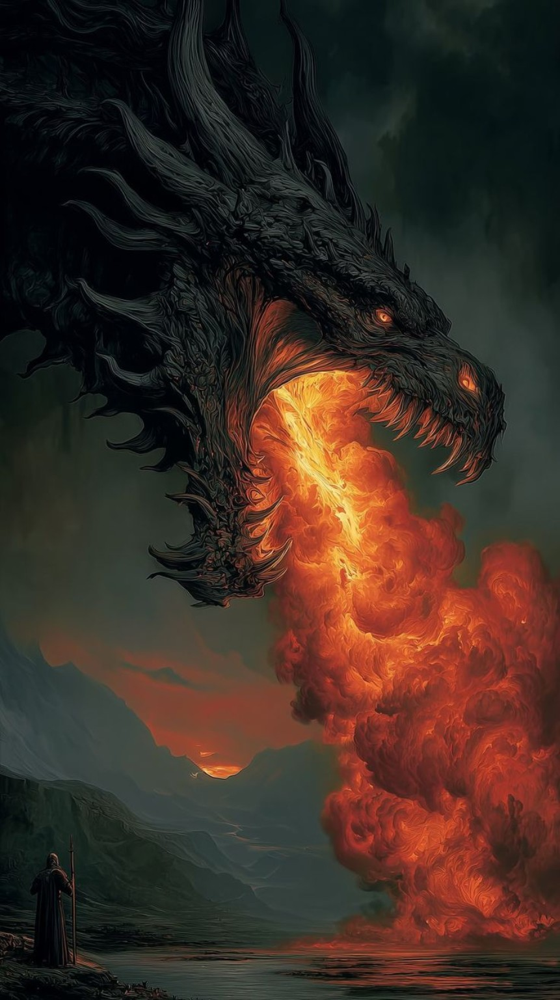
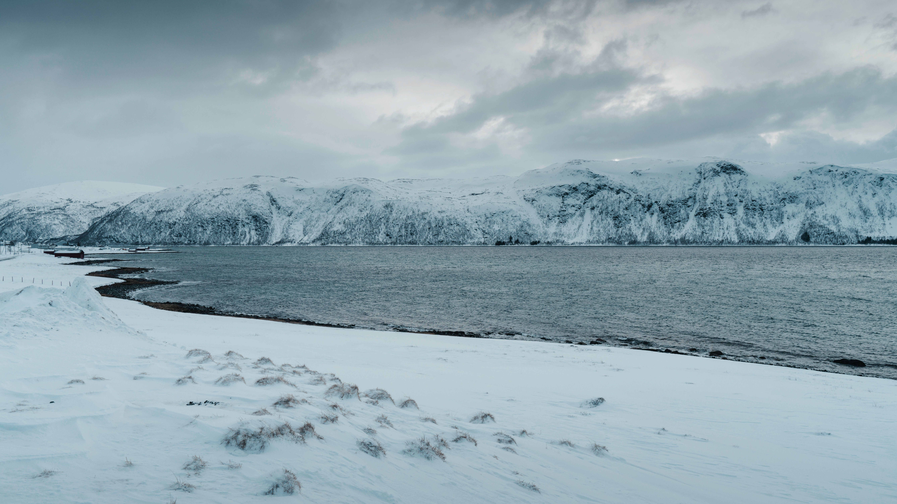
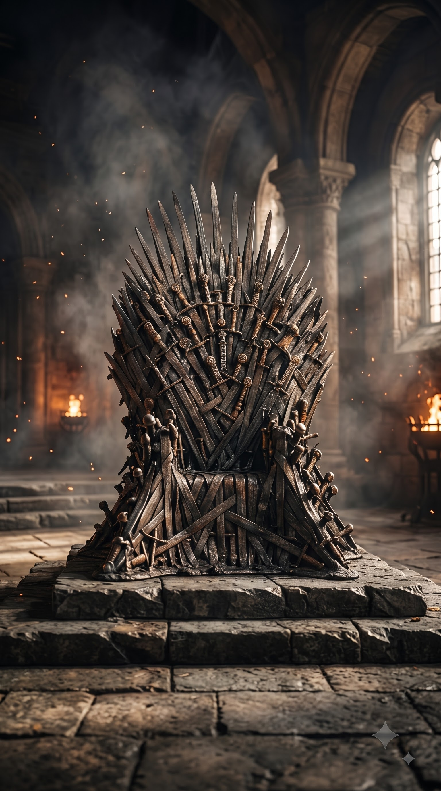

01 / FIRE & BLOOD
THE DRAGON
Power that changed the fate of kingdoms.
From the frozen North to the burning skies, kingdoms rose, bloodlines fractured and legends became history.
Dragons changed the balance of power. Flame became a language the realm could not ignore.

02Beyond the Wall, an older war waited. Winter was not a season. It was a reckoning.

03Seven kingdoms. One seat. An endless price paid in loyalty, betrayal and blood.
Tap a house to turn the sigil into its story.
Legends are remembered by the choices they survive.

A man caught between blood, duty and the fate of the North.
Move through the moments when the map itself changed.
Choose a region. See the forces that shaped it.


The cold does not chase you. It waits.

Three icons of Westeros, captured in continuous 360° rotation.
Power that changed the fate of kingdoms.
Every crown carries the weight of a realm.
The old strength of the North endures.
One realm. Centuries of ambition.
